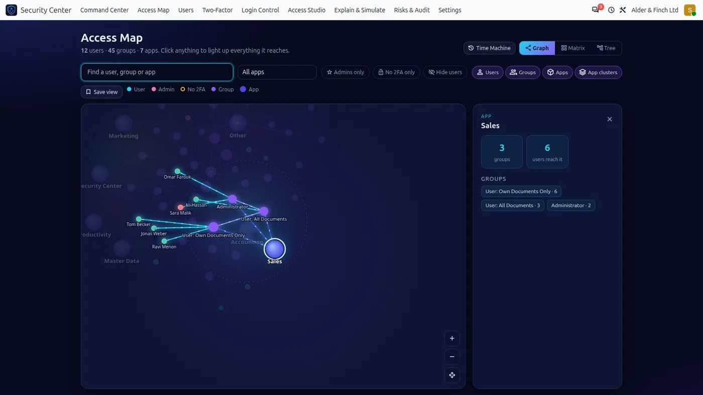
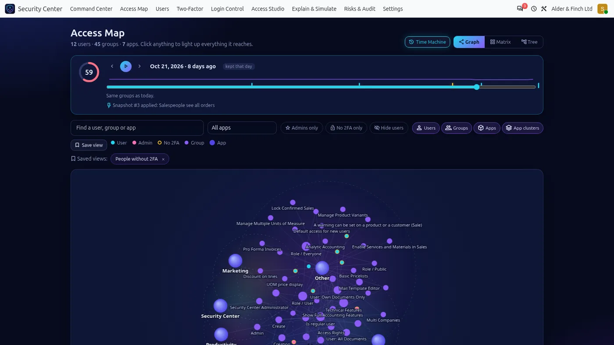
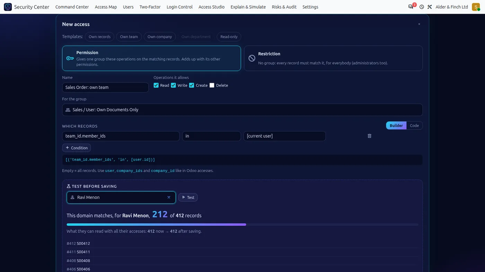
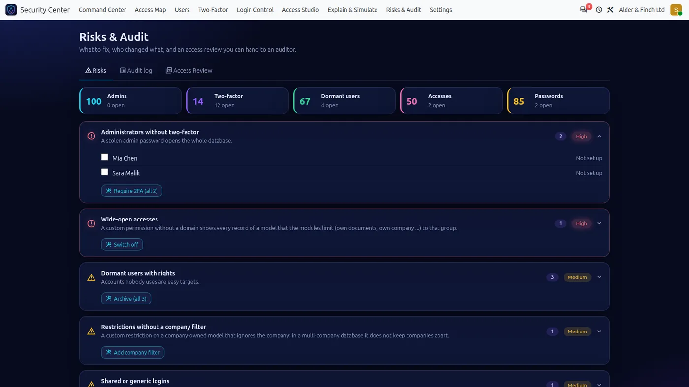

01 / 04
Security Center
See who can open what. Make 2FA required.
Required two-factor sign-in, password reset and expiry, an interactive access map and a record rules and access rights manager, all on one screen inside Odoo.
- Odoo 18 adds a what-if simulator, saved map views and a 2FA policy impact preview
- Odoo 19 adds a Ctrl+K command palette, a risk timeline and an optional daily email digest
- Odoo 20 adds the Time Machine, ir.access support and a keyboard-first interface; 279 automated tests
- 20 v1 · $119
- 19 v1 · $99
- 18 v1 · $89
- 17 v1 · $79